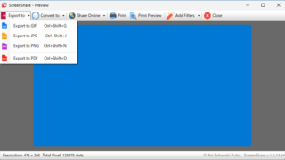

A useful screenshot tool for sharing images, OCR, etc.

Free software for Windows that lets you take full-screen, selected area, or webcam screenshots. Additional features include image OCR, Imgur upload, and image editing.
ScreenShare Overview
ScreenShare offers an experience that goes beyond standard screen capture software.
ScreenShare Features
These are the main features of ScreenShare.
| function |
overview |
| Main Features |
Screenshot |
| Function details |
- Take and save full screen, selected area, and webcam screenshots. - OCR images and convert them to text.
- Upload and share images on Imgur.
- Add filters to images. |
You can take and save screenshots
ScreenShare is a screenshot tool for Windows that allows you to take screenshots of your PC screen or webcam screen and save them in GIF, JPG, PNG, and PDF formats.
ScreenShare includes Optical Character Recognition (OCR) technology to extract and convert text from screenshots and documents that cannot be copied directly, although OCR does not currently support Japanese characters.
Quickly share your images
ScreenShare has the ability to upload images to Imgur without the need for login or registration, allowing users to get an image link and share screenshots and webcam photos with others quickly and efficiently.
ScreenShare also allows you to add simple filters to your images, such as sepia, negative, or black and white.
A useful screenshot app for sharing images and using OCR.
ScreenShare is a useful application for sharing images from your PC screen or webcam, or for converting images to text using OCR. It also supports keyboard shortcuts, making it a great everyday screenshot tool..
|